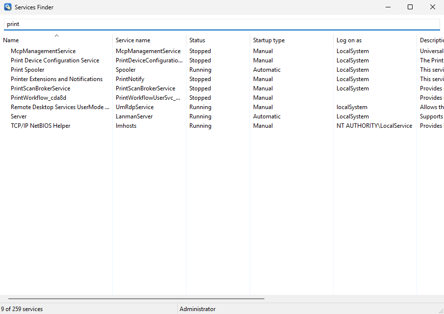
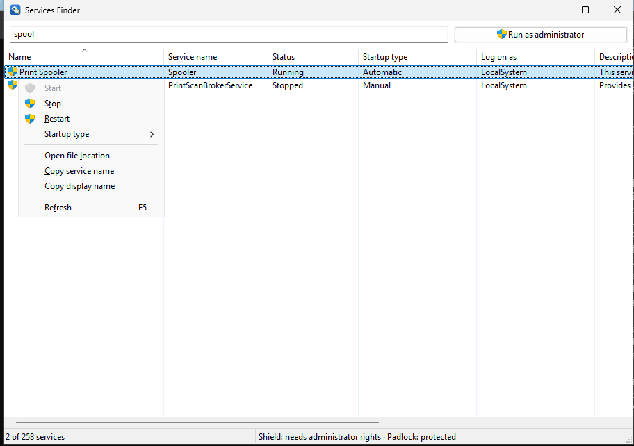
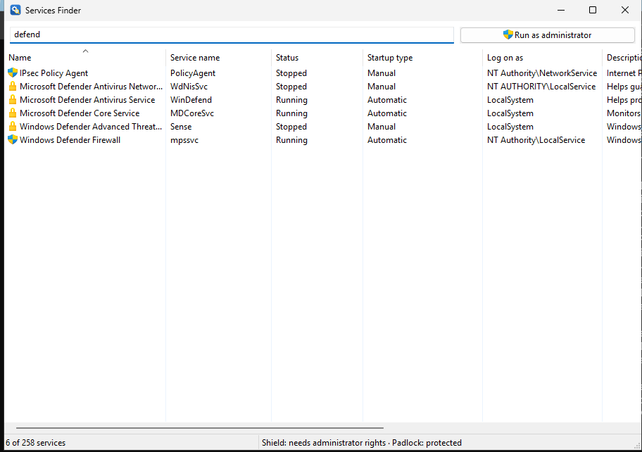

What it does
Ce qu'il fait
- Search everythingName, service name, description, path, account, status and startup type. Several words must all match;
-wordexcludes. - See what needs adminA shield marks the services you can't start or stop without administrator rights; a padlock marks the ones Windows protects from everyone.
- Act without restarting itRight-click to start, stop, restart or change the startup type. When an action needs admin, Windows asks for that one action only.
- Keyboard firstCtrl+F to search, ↓ into the list, Esc clears, F5 refreshes. Click a column to sort.
- Cherche partoutNom, nom du service, description, chemin, compte, état et type de démarrage. Plusieurs mots doivent tous correspondre ;
-motexclut. - Montre ce qui demande l'adminUn bouclier signale les services qu'on ne peut pas démarrer ou arrêter sans droits administrateur ; un cadenas, ceux que Windows protège contre tout le monde.
- Agit sans relancer l'appliClic droit pour démarrer, arrêter, redémarrer ou changer le type de démarrage. Si l'action demande l'admin, Windows le demande pour cette action seulement.
- Au clavierCtrl+F pour chercher, ↓ pour entrer dans la liste, Échap efface, F5 actualise. Clic sur une colonne pour trier.


Good to know
It runs with your normal rights; the Run as administrator button reopens it elevated if you'd rather confirm once.
Windows refuses Automatic (delayed start) for services in a load-order group, such as the Print Spooler; the option is greyed out for them.
For scripts: services_finder --list prints every service as tab-separated text.
Bon à savoir
Il tourne avec vos droits normaux ; le bouton Exécuter en tant qu'administrateur le relance élevé si vous préférez valider une seule fois.
Windows refuse Automatique (début différé) pour les services d'un groupe de chargement, comme le spouleur d'impression ; l'option est grisée pour eux.
Pour les scripts : services_finder --list affiche tous les services en texte séparé par des tabulations.